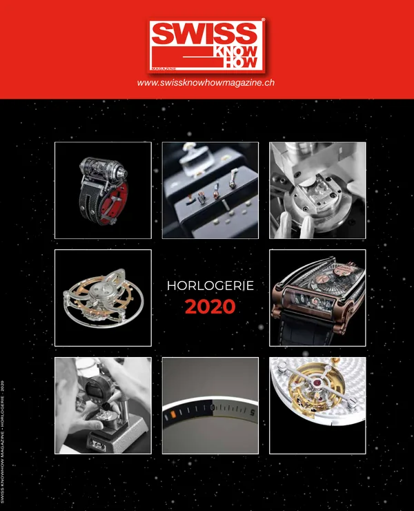

« Innover, c’est indispensable. Il faut toujours trouver quelque chose de plus, de différenciant. »— Andrea De Luca
Texte intégral
Spécialisée dans les techniques de traitements et de décorations de surfaces pour l’horlogerie, DM Surfaces SA de Saint-Imier est à la recherche constante de l’innovation. Elle a ainsi mis au point des procédés uniques qu’elle fait breveter. Actuellement leader des technologies laser pour l’horlogerie, la société s’intéresse désormais à la fabrication additive métallique.
DM Surfaces SA s'est vu décerner le Prix Raiffeisen des Entrepreneurs de Suisse romande 2019. La PME a été récompensée en raison de ses investissements et prestations innovants sur le marché et de sa capacité d'atteindre des avantages concurrentiels clairs. DM Surfaces SA exerce avec succès son activité, de manière économiquement durable et contribue de façon décisive à l’évolution du marché de l’emploi. Le «Prix Raiffeisen» est remis par Raiffeisen, en collaboration avec le Raiffeisen Centre des Entrepreneurs RCE, à des entreprises suisses pour leurs excellentes performances entrepreneuriales.
« Innover, c’est indispensable. Il faut toujours trouver quelque chose de plus, de différenciant. Le client attend cela », lance Andrea De Luca, fondateur et patron de DM Surfaces SA à Saint-Imier. Spécialisée dans les traitements de surface, l’entreprise est d’ores et déjà leader des technologies laser pour l’horlogerie. Prochaine étape, la fabrication additive, soit l’impression métal 3D qui ouvrira de nouveaux horizons créatifs. « Cela apportera un nouveau segment à l’entreprise. En combinaison avec les autres techniques de pointe dont nous disposons à l’interne, nous pourrons explorer des formes plus complexes et actuellement impossibles à réaliser », explique Andrea De Luca.
La recherche comme priorité
Un peu plus de 70 personnes sont employées à l’interne. Avec un accent sur le bureau technique, méthodes et industrialisation et celui de design. « Nous devons pouvoir développer des solutions industrielles complètes pour nos clients avec un maximum de réactivité, et ceci démarre dès la conception », relève Andrea de Luca qui poursuit : « Mais surtout, nous mettons l’accent sur la recherche et le développement ». Ainsi, ingénieurs et docteur en photonique actif dans la toute nouvelle cellule interne de prototype et R&D ont déjà développé plusieurs procédés exclusifs actuellement en cours de dépôt de brevet. Des nano structure antitaches appliquées à l’horlogerie sont par exemple le fruit de cette synergie.
Précurseurs du laser
La société a débuté en 2007 à La Chaux-de-Fonds, avec des activités de galvanoplastie pour l’horlogerie (ce qu’elle fait toujours). Rapidement toutefois, la technologie laser s’est invitée à l’atelier. « C’était une technologie encore très rare dans le milieu horloger. Nous avons pu faire comprendre à nos clients les avantages qu’elle leur donnerait. Ils ont rapidement suivi le mouvement », indique Andrea de Luca.
La société a choisi de développer ses activités en construisant de vastes locaux modernes à Saint-Imier. Là, le parc de machines s’est considérablement étendu. Une trentaine de CNC laser (jusqu’à 7 axes !) ronronnent jour et nuit pour décorer, texturer, graver et découper, ponts, masses oscillantes, cadrans, et autres lunettes, fonds ou boîtes de montre.
Diversifications
En parallèle de son core business focalisé sur les technologies laser, la société poursuit et développe son activité historique de galvanoplastie. Elle a aussi étoffé ses compétences dans la décoration traditionnelle, la pose de céramique hybride ou encore la fabrication d’ébauches qu’elle transformera par la suite afin d’offrir à ses clients un mix produit très diversifié.
Les compétences de DM Surfaces SA s’ouvrent aussi à d’autres secteurs industriels, comme le médical ou l’automobile. « Nous avons franchi un cap dans l’industrialisation de nos procédés en intégrant la robotisation de nos équipements afin d’être toujours plus productif et compétitif » explique Raynald Favre, Directeur Technique de l’entreprise.
Bien entendu, cette diversification s’opère sans pour autant perdre ses valeurs ancrées dans l’émotionnel de produits aux exigences esthétiques poussées. « Nous faisons aussi désormais notre place dans le bespoke et l’ultra-personnalisation des accessoires de luxe et des montres ». Ainsi, coffrets, instruments d’écritures, produits de maroquinerie ou boutons de manchettes, mais aussi montres de clients finaux sont autant d’objets sur lesquels DM Surfaces SA laisse sa trace.
Des procédés exclusifs
La cellule de Recherche et Développement de DM Surfaces SA a mis au point plusieurs procédés laser exclusifs déjà commercialisé et appliqué sur des produits clients. Ces procédés font l’objet d’une demande de brevet.
Animérien© : Un procédé de micro-textures sur saphir qui permet, grâce à des couches superposées et mobiles, des animations très fines.
DalM© : Cette technique spécifique permet de graver le saphir au laser tout en procédant à une coloration de la gravure, ceci par déposition atomique durant la gravure même.
Nano Spectre© et Nano Spectre Color© : une technique qui fait appel à un mix de micro-textures appliquées au laser et qui, en fonction de l’orientation de la lumière, produisent des effets optiques diffractifs.
Ces technologies, DM Surfaces SA les met en pratique pour ces clients, mais les condense aussi dans des objets élevés au rang d’œuvre d’art, développés à l’interne pour promouvoir son savoir-faire et ses innovations lors des salons et expositions.
Comme la Misteriosa, cette pendule de table qui réunit la totalité des savoir-faire développés à l’interne, depuis le design jusqu’à la réalisation, avec parmi eux les techniques exclusives citées plus haut, mais aussi des incrustations de céramiques hybrides de tous types, diverses texturations laser et plusieurs mises en couleurs galvaniques.
Quant au projet « Voyages extraordinaires », il propose trois concept-watches rappelant l’univers de « 20'000 lieues sous les mers » de Jules Vernes. Outre les techniques citées plus haut, on y découvre un savant mélange entre fabrication additive et post traitement laser sublimant le mariage technologique d’avenir entre l’additif et le soustractif. On y retrouve des structurations, texturations et colorations laser, et même une soudure laser-saphir inédite.
Une usine « verte »
Installée dans un petit îlot de verdure au sud de la ville de Saint-Imier, l’usine DM Surfaces SA est particulièrement concernée par le développement durable de ses activités et le respect de l’environnement. Or, son vaste atelier de galvanoplastie fait appel à des substances qui pourraient s’avérer très polluantes. C’est pourquoi l’entreprise s’est dotée d’une station d’épuration interne qui garantit un rejet « zéro » de métaux lourds et autres substances polluantes. Tout le sous-sol sous l’atelier est ainsi occupé par la station qui filtre les bains et précipite chimiquement les substances à éliminer. Les déchets sous forme de flocons secs sont ensuite compactés et confiés à une entreprise spécialisée dans leur élimination. L’eau résiduelle est quant à elle directement acheminée à la STEP communale pour le traitement biologique classique réservé aux eaux usées domestiques.
Investir massivement dans une telle installation qui ne produit rien garantit à l’entreprise de rester autonome dans le traitement de ses rejets, mais constitue aussi une plus-value importante dans la maîtrise des processus pour ses clients toujours plus exigeants au niveau qualité et pointilleux en matière de respect de l’environnement.
Texte paru dans Swiss Knowhow – Horlogerie 2020, p. 12-13, tel que publié dans l'édition imprimée. En cas d'écart, la version imprimée fait foi.
Personnes citées
- Andrea De LucaFondateur et patron
- Raynald FavreDirecteur technique

Paru dans
Swiss Knowhow – Horlogerie 2020
2020 · page 12-13 · article original en français
Signaler une erreur Lire l'article complet PDF